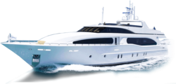
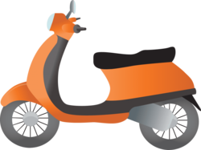

How to get to Xiao Liuqiu Island?
The faster way to reach little Liuqiu.
Did you know that you can be in Liuqiu island in only 3h30 from Taipei? Just check this out!
There is a 25 minutes ferry leaving frequently from Donggang Pier (you can find the boat schedules below on the ferry section).
If you come from Taipei, the faster way would be to take the HSR train, It can reach Zuoying station, in Kaoshiung in 1h30 only! You can find the schedules in English on this website
https://en.thsrc.com.tw/
Once you are in Zuoying station, there is a direct bus (9127D) going to the ferry terminal of Donggang, the journey is about 45 minutes. (You can find the schedules below on the bus section).
An other option would be to take the taxi, who can be private taxi, uber or a shared taxi for 200nt per person.
So for example if you take the 7h31 train from Taipei, you ll reach Zuoying station at 9h05 then take the bus at 9h30, you will be at Donggang station before 10h15, take the ferry at 10h30 and you will be at Xiaoliuqiu Island before 11am, Amazing right!
You should follow the exit 2 when you are inside Zuoying station and you will see the office who sell the bus tickets for Donggang and Kenting. You can also buy it directly on the bus. The bus station is located right in front the exit 2.
Going to Liuqiu by car
If you prefer to drive to Liuqiu, first you have to know that you can't bring your car unless you are a resident of Xiaoliuqiu. Even the locals use mostly motorbikes there, driving car is not very convenient on the Island.
You can park your car in Donggang, there is couple of parking area around. One of the cheapest way would be to go to this place (on the picture just below) in front of the pier, they come with you to the parking area and bring you back to the pier free of charge, same when you come back to Donggang. If you are lucky they may even find you a place on the small street beside. This cost 100nt per days.
Going to Liuqiu by bus
To reach Dongang ferry station by bus, the most convenient is to take the bus 2197D from Zuoying station in Kaoshiung. It is a direct bus for 120nt per person, the journey takes about 45 minutes. You can see the bus schedules on the first column of the first picture below. You can take this bus also to come back to Zuoying, the bus station is located just beside the ferry terminal, the schedules are on the second column of the second picture.
There is also a public bus (9117)from Zili station in Kaoshiung passing by Kaoshiung main station going to Kenting. You should stop in Pingtung bus Donggang station then take the bus 503, take a taxi or walk for about 15 minutes to Donggang ferry terminal. This is a bit long because this bus from Kaoshiung will do many stop but it is a cheap way to come and can be a good option if you are living in the south of Kaoshiung.
Going to Liuqiu by taxi
If you don't want to waist time, going by taxi can be a good option. You can get a regular taxi, or take a shuttle taxi from Zuoying station for 200nt per persons, or from Kashiung main station for 150nt. You may have to wait 4 passengers for the taxi to leave, however sometimes he goes even with 2 peoples.
To go back to Kaoshiung, the price is the same, all the taxi drivers are waiting for you when you are going out from the ferry, you can't miss them :D.
Ferry schedules to the island
You can find all the information about the ferry schedules and prices on this website which it was still accurate in January 2021.
Ferry schedules
I suggest you the private companies ferries because you will arrive in Baisa port where there is all the motorbike rental companies and the "center" of Xiaoliuqiu.
If you buy a return ticket, you have to know that the tickets are for selling under 2 different companies, you will have to take the same company when you will leave Xialiuqiu. You can see it beside the schedules, on the pic below, there is 2 main companies. Just make sure you pick up a schedule of the same one. It is written in chinese, but you can look that the characters are the same ;D.
Transportation in Xiaoliuqiu
The island is tiny but it is better to have a vehicle to move around. Most of tourists and locals have a motorbike, there is plenty of company renting scooters here or you can ask your hotel as well. There is also lot of electric motorbikes for rent and charging station around the island.
You can find electric bicycle and regular one, but the island is not flat, so you might have some difficulties if you don't follow the coast.
If you are not planning to rent a motorbike, I suggest you to find an hotel near Baisa pier, where most of the ferries arrive (see on the ferry section). It is where you will find most of restaurants, bars and shops. There is also a bus on the island if you want to visit around.
A trick to pay a bit cheaper is to buy your return ferry ticket with the motorbike rental to the local women outside the ferry terminal in Donggang. You can find them easily with a bunch of tickets on their hands, If they don't find you first. The price of the ferry would be the same but you can rent your motorbike cheaper than once on the island, they will give you a ticket and you can get it when you will go out from the boat in Liuqiu.
For those who don't have Taiwanese driving licence, the good news is most of the companies don't care much about that here, you will also notice that most of the people do not even wear helmet in Liuqiu. You can expect to rent your motorbike for 400nt a day to your hotel, 300nt a day in a rental company and 250nt to 200nt for couple of days if you book it in Donggang.
And for the most adventurous, you can come to Donggang in motorbike and put it on the boat for 100nt.